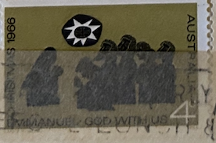
| SOURCE | TITLE| IMAGE MATCH | click to source page |
| Osta.ee | 60-12 varia leiunurk Austraalia (247190669) - Osta.ee | 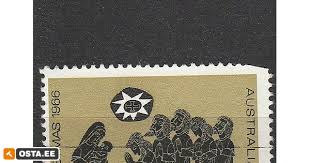 |
| HipStamp | Australia 467 (used) 25c Christmas: tree of life (1969) | Australia & Oceania - Australia, General Issue Stamp / HipStamp | 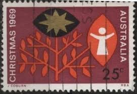 |
| eBay | Australia MNH Stamp - 1981 Commonwealth Heads of Government Meeting - AF34 | eBay | 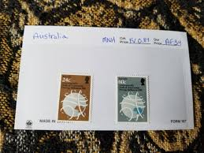 |
| NZ Post | Satellite Station | 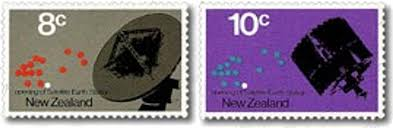 |
| Hawaii.gov | 11:IMOJ. YdYJ. | 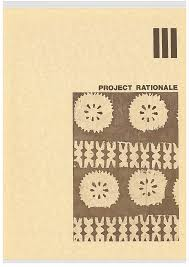 |
| Dreamstime.com | Stamp Millenium Stock Photos - Free & Royalty-Free Stock Photos from Dreamstime | 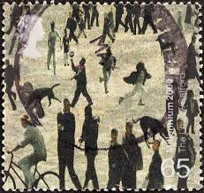 |
| lbdphilately.com | Products | 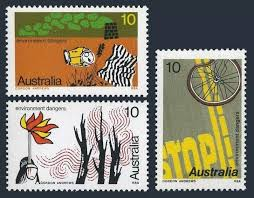 |
| Collect GB Stamps | British Stamps for 1999 : Collect GB Stamps | 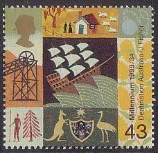 |
| Etsy | Great Britain 1988 Bicentenary of Australian Settlement- Set of 4 Mint Stamps - Collecting, Crafting, Collage, Decoupage, Scrapbooking - Etsy UK | 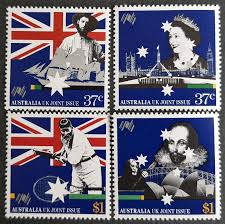 |
| eBay | Mint Never Hinged/MNH Space New Zealand Stamps for sale | eBay | 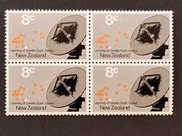 |
| Mystic Stamp | 7255756 - 1995 UN VN Youth:Our Future Combo FDC - Mystic Stamp Company | 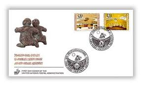 |
| Stamp Community Forum | Modern Industrial Art And Design - Page 11 - Stamp Community Forum | 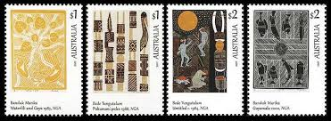 |
| ALLBIDS | Collection of Australian Stamps - Lot 1512027 | ALLBIDS | 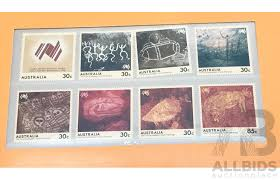 |
| Classmates.com | 1973 yearbook from Oak Park River Forest High School from Oak park, Illinois | 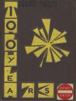 |
| eBay | AUSTRALIA - 1984 FIRST AUSTRALIANS - Sc#932/939 - MNH - E 2752 | eBay | 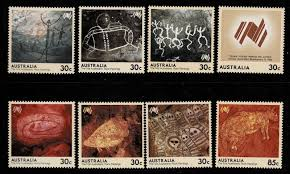 |
| lbdphilately.com | Products | 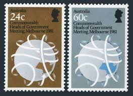 |
| eBay | Greece #568-73 mint hinged a21.1 1742 | eBay | 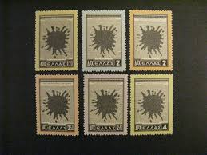 |
| HipStamp | Australia 606-08 MNH 1975 Environmental Dangers Full Set of 3 Very Fine | Australia & Oceania - Australia, General Issue Stamp / HipStamp | 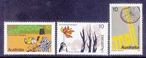 |
| NicePNG | Aboriginal Clip Art Transparent PNG - 772x456 - Free Download on NicePNG | 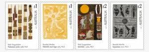 |
| Blogger.com | NUS Geog Soc: September 2009 | 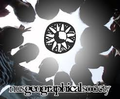 |
| HipStamp | Australia 1988 Scott 1087 used - 37c, Bush potato country by Turkey Tolson | Australia & Oceania - Australia, General Issue Stamp / HipStamp | 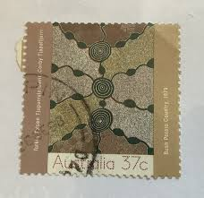 |
| eBay | AUSTRALIA 2017 ART OF THE NORTH SET OF 4 UNMOUNTED MINT, MNH | eBay | 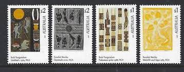 |
| Shutterstock | Cereal Stamp: Over 540 Royalty-Free Licensable Stock Photos | Shutterstock | 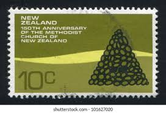 |
| Australia. Arts Councils in Regional Australia. Silhouettes of performing artists, outdoor scene. Violinist, hand holding flower, dancer, tree in field. Scott 1557 A516, Issued 1996 Sept. 12, Perf. 14, Litho., 45c. /ldb. | 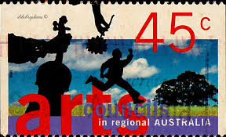 | |
| Freestampcatalogue.com | Stamps from Australia - Freestampcatalogue.com - The free online stampcatalogue with over 500.000 stamps listed. | 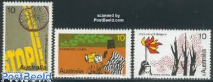 |
| eBay UK | AUSTRALIA 1974 Enviromental Dangers Complete Set of 3 Fresh Mint Never Hinged | eBay UK | 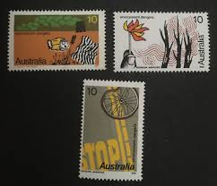 |
| eBay | 2017 Art Of The North - MUH Set of 4 Stamps | eBay | 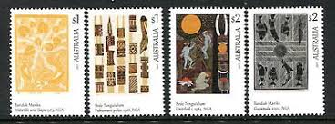 |
| jamesmaas.com | Canada Stamps MP1017 - Guatemala, 50 Different Stamps - Mystic Stamp Company Postal Stamps Canada Post | 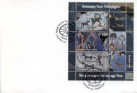 |
| Golden Oak Online Auctions | Golden Oak Online Auctions LLC | 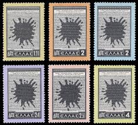 |
| Dreamstime.com | Stamp Emu Stock Photos - Free & Royalty-Free Stock Photos from Dreamstime | 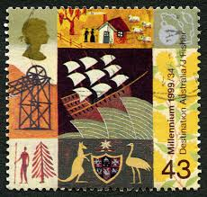 |
| HipStamp | Australia 847: 27c Yirawala Bark Painting, used, VF | Australia & Oceania - Australia, General Issue Stamp / HipStamp | 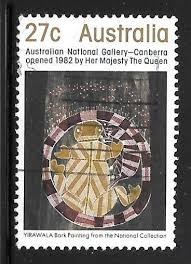 |
| MacDougall's | Russian Art + NFT Auction - 10 June 2021 | 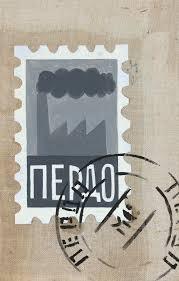 |
| eBay | Australia 1993 Aboriginal Paintings Full Set Fine Used 11996 | eBay | 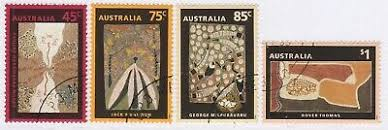 |
| Etsy | Greece 1954 Unity With Cyprus Set of Six Postage Stamps Mint Never Hinged - Etsy Australia | 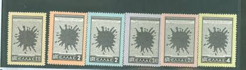 |
| 123RF | AJMAN - CIRCA 1972: A Stamp Printed In Ajman Shows Napoleon I Bonaparte (1769-1821), Stateman, Series Famous Men, Circa 1972 Stock Photo, Picture and Royalty Free Image. Image 149862871. | 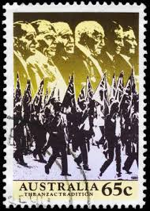 |
| Flickr | dirt | menfeet | Flickr | 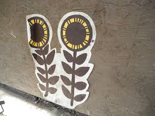 |
| About six months ago, I came across a post about ancient petroglyphs found in different parts of the world — in Fugoppe Cave (Japan), Nine Mile Canyon (Utah), and Gobustan (Azerbaijan). What | 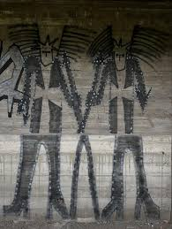 | |
| Dreamstime.com | World Stamps Expo Stock Photos - Free & Royalty-Free Stock Photos from Dreamstime | 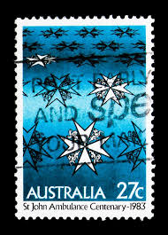 |
| Stamps - මුද්දරයේ තතු (@wipulastamps) • Facebook | 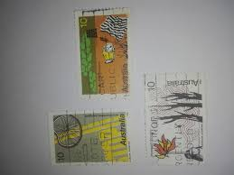 | |
| Aotearoa New Zealand History - Facebook | 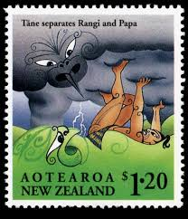 | |
| Collect GB Stamps | Settlers Tale (1999) : Collect GB Stamps | 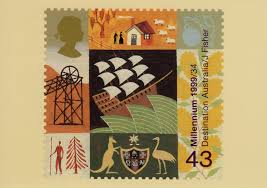 |
| eBay | 1954 Greece #568-72 British Parliament & Ink Blot - OGNH - VF - $84.00 (E#1762) | eBay | 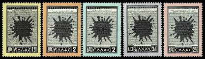 |
| Etsy | Vintage Pure Irish Linen Inuit Print Tea Towel Apron Unused Rare - Etsy | 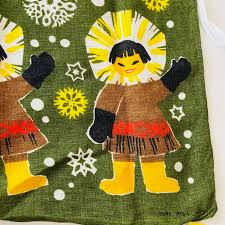 |
| eBay | Australia Scott #1087 - #1090 Complete Set of 4 Mint Never Hinged | eBay | 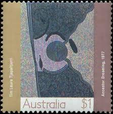 |
| australia christmas 1971 stamps with wise men | 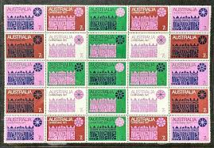 | |
| Creative Spirits | Australian stamps celebrating Aboriginal culture - Creative Spirits | 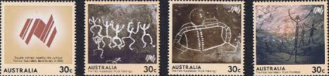 |
| www.jahangirkhanllc.com | Ancient Chinese Cave Paintings Portfolio Prints | 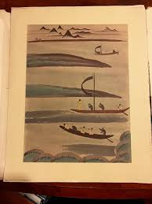 |
| eBay | AUSTRALIA (SCOTT 814 - 815) -1981 COMMONWEALTH HEADS OF GOVERNMENT (SET 2) - MNH | eBay | 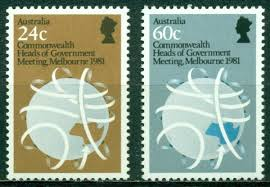 |
| Gallery 3 Byron Bay | Bill Nicholson - Station Street Co-Op — Gallery 3 Byron Bay | 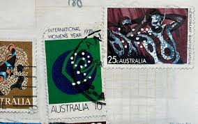 |
| Shutterstock | Australian Postage Stamps: Over 5,826 Royalty-Free Licensable Stock Photos | Shutterstock | |
| Shutterstock | Milan Italy July 21 2016 Aboriginal Stock Photo 496324696 | Shutterstock | |
| Collector's Shop International | Stamp Period 1924-1959 MNH (2) | |
| Delcampe | Search in the "Used stamps" category | Delcampe | |
| stamps.kg | Saimaluu Tash Petroglyphs | |
| eBay | AUSTRALIA # 550-553 MNH AUSTRALIAN ECONOMIC DEVELOPEMENT | eBay | |
| eBay | GREECE 568-573 MINT LH | eBay | |
| eBay | Griechenland 1954 - Mi-Nr. 618-623 ** - MNH - Zypern (I) | eBay | |
| eBay | Australia 1307-1310, MNH. Michel 1331-1334. Aboriginal paintings, 1993. | eBay | |
| Tunisia Stamps | Philatelic Products Issue 07 (1985) | |
| eBay | Australia 550-553 MNH 1973 | eBay |